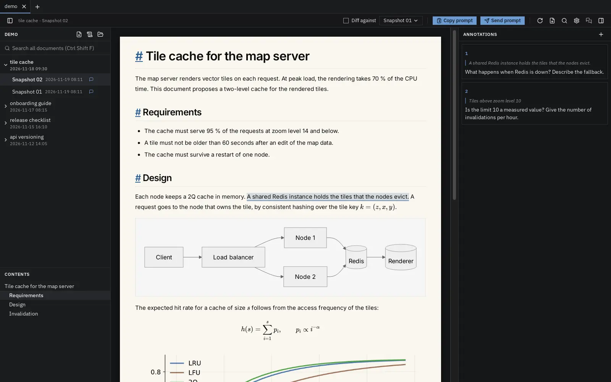
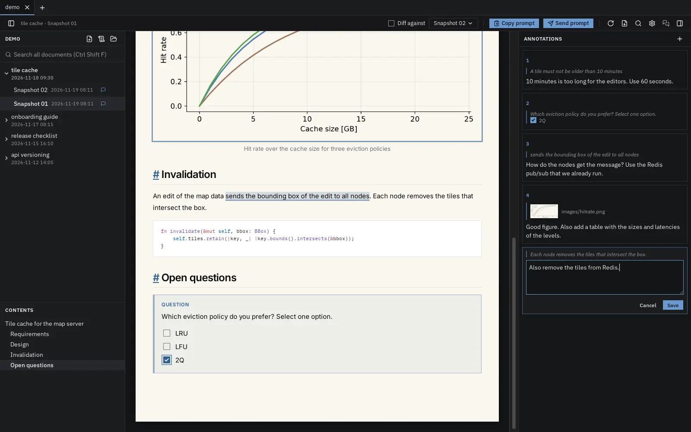
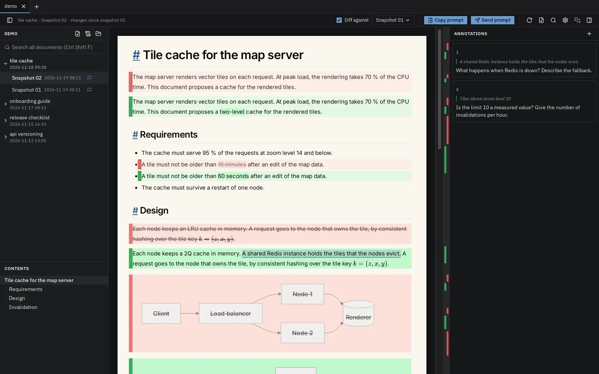

Galley
Review the documents of your AI agent.
Read Markdown and PDF documents, annotate them, and see what changed in the next snapshot.

Workflow
One directory, many rounds.
- The agent writesa document into the galley directory.
- You annotatetext, figures and regions.
- You sendthe annotations to the agent with one prompt.
- You comparethe next snapshot in the diff.
Annotate
Comments go to the agent as a file.
- Comments on text, figures and regions
- Checkboxes and text fields for questions
- Saved in
annotations.md

Diff
See only what changed.
- Word diff inside paragraphs
- A gutter shows where the changes are
- Also for PDF documents

Features
Rich Markdown
Math, mermaid diagrams, code, tables and alerts.
PDF documents
Annotate and diff papers from LaTeX or Typst.
Any agent
Plain files and relative paths: works with containers and remote hosts.
Claude Code
Send the prompt to a local Claude Code with one click.
Search
Search all documents and annotations.
PDF export
Export a document, with the diff if you want.
Install
Download for Linux.
Packages for x86_64. Galley needs WebKitGTK 4.1, which the package manager installs with the .deb and the .rpm.
$sudo apt install ./galley_amd64.deb
$sudo dnf install ./galley.x86_64.rpm
$chmod +x Galley_amd64.AppImage && ./Galley_amd64.AppImage
$galley path/to/galley-directory
All versions are on the releases page.
Build from source.
Requires Rust, Node.js, pnpm and libwebkit2gtk-4.1-dev.
$git clone https://github.com/pglira/galley.git
$cd galley && scripts/install.sh
$galley path/to/galley-directory